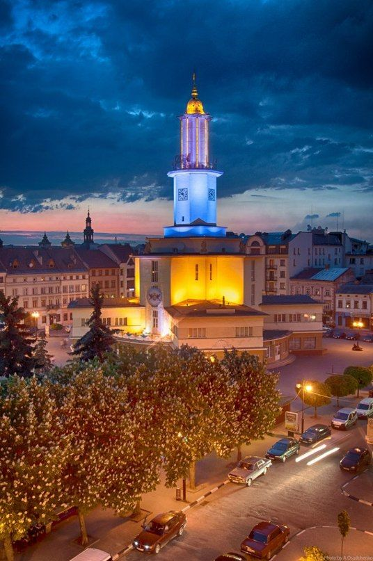

My hobbies are
- Studying
- Walking
- Taking photos
My favourite films are
- Interstellar
- Harry Potter
- Bride corpse
Ivano-Frankivsk , formerly Stanisławów, city, western Ukraine. It lies along the Bystritsa River just above its confluence with the Dniester River. Founded in 1662 as the Polish town of Stanisławów (Ukrainian: Stanyslaviv), it occupied an important position on the northern approach to the Yablonitsky Pass over the Carpathians. From 1772 to 1919 it was held by Austria; in 1945 it was ceded to the Soviet Union and named Stanislav; and in 1962 it was given its present name, honouring the Ukrainian political activist and writer Ivan Franko. Industries in the modern city have included light engineering, timber working, furniture making, and food processing. There are medical and teacher-training institutes and vocational schools.
